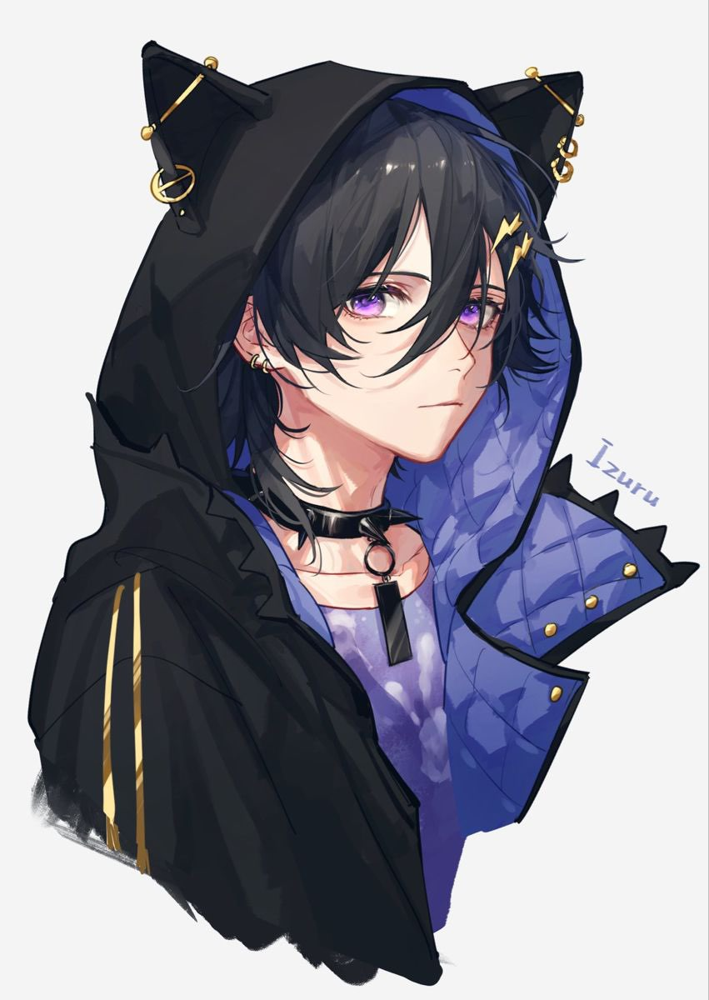

Cooper

Basics
Name
Cooper Falinks
Username
Saybr
Guild
N/A
Gender / Pronouns
Demi-Boy They/Him
Age
19
Orientation / Sexuality
Bisexual
Availability
Single! (Has eyes on Icarus)
Personality
Like his twin brother, Cooper can be very loud. But not as loud as his brother. He is more than most times calm and content. He is happy to lend a helping hand to those in need. He loves puzzle games.
Character Stats
Race / Class
Neko
Level
34
Extra Extremities
Cat Ears, Tail
Abilities
Weaknesses
He gets startled easily.
Special Skills
He is very talented with puzzles.